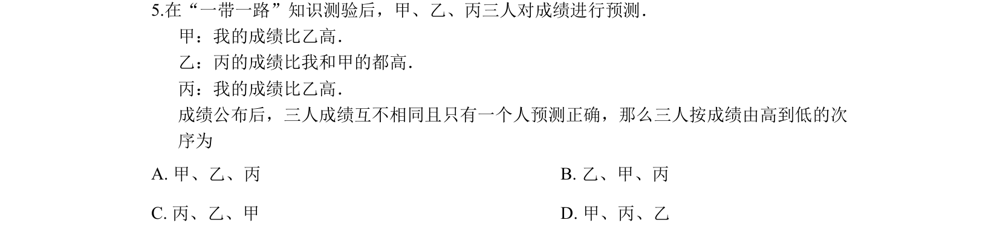
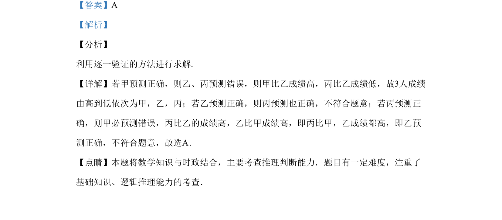

考点：逻辑推理 反证法 推理判断

本题通过三人成绩预测的推理情境，考查逻辑分析与反证法的应用。

📄 原 PDF 第 3 页：
素材/真题/吉林/2008-2024·（吉林）数学高考真题/2019年高考数学试卷（文）（新课标Ⅱ）（解析卷）.pdf
5.在“一带一路”知识测验后，甲、乙、丙三人对成绩进行预测． 甲：我的成绩比乙高． 乙：丙的成绩比我和甲的都高． 丙：我的成绩比乙高． 成绩公布后，三人成绩互不相同且只有一个人预测正确，那么三人按成绩由高到低的次 序为 A. 甲、乙、丙 B. 乙、甲、丙 C. 丙、乙、甲 D. 甲、丙、乙
【答案】A 【解析】 【分析】 利用逐一验证的方法进行求解. 【详解】若甲预测正确，则乙、丙预测错误，则甲比乙成绩高，丙比乙成绩低，故3人成绩 由高到低依次为甲，乙，丙；若乙预测正确，则丙预测也正确，不符合题意；若丙预测正 确，则甲必预测错误，丙比乙的成绩高，乙比甲成绩高，即丙比甲，乙成绩都高，即乙预 测正确，不符合题意，故选A． 【点睛】本题将数学知识与时政结合，主要考查推理判断能力．题目有一定难度，注重了 基础知识、逻辑推理能力的考查．